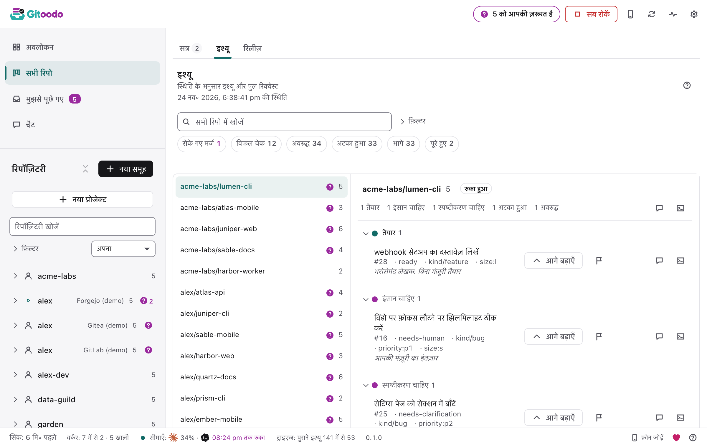

उपयोगकर्ताओं के लिए · रोज़ का काम
सभी रिपो
इस पेज पर

सभी रिपॉज़िटरी एक जगह: हर खुला इश्यू अपनी स्थिति, स्कोर और उस पर काम कर रहे एजेंट के साथ, उप-पेजों में बँटा हुआ। खोज और फ़िल्टर इसे रिपॉज़िटरी, स्थितियों या लेबल तक सीमित करते हैं।
- एजेंट सत्र किसी एजेंट का चल रहा सत्र टर्मिनल में दिखाता है।
- चैट में चर्चा करें किसी इश्यू को चैट को सौंपता है।
सभी repos आपकी सभी रिपॉज़िटरी एक जगह दिखाता है और उप-पेजों में बँटा है। ऑर्केस्ट्रेटर मोड में ये हैं सत्र, इश्यू और रिलीज़; डायरेक्ट मोड में काम जारी, इश्यू और पुल रिक्वेस्ट। आँकड़ों वाला अवलोकन इनमें से नहीं है: वह होम पेज है, ऐप इसी पर खुलता है; नेविगेशन की पहली प्रविष्टि अवलोकन और ऊपर बाईं ओर Gitoodo लोगो, दोनों वहीं वापस ले जाते हैं। Gitoodo आपका आख़िरी इस्तेमाल किया उप-पेज याद रखता है और उसे दोबारा खोलता है, रीस्टार्ट के बाद भी। अगर आपने विंडो किसी रिपॉज़िटरी के व्यू में बंद की थी, तो ऐप फिर वहीं खुलता है। सभी repos में कहीं भी किसी इश्यू पर क्लिक करने से उसका विवरण खुलता है: रिपॉज़िटरी, स्थिति, लेबल, प्राथमिकता, वह किस पर निर्भर है, माइलस्टोन, उस पर कौन काम कर रहा है और, अगर वह अगली रिलीज़ का हिस्सा है, तो क्यों।
काम जारी#
किसे आपकी ज़रूरत है और क्या आगे बढ़ रहा है
केवल डायरेक्ट मोड में: पेज दिखाता है कि आपको किसकी ज़रूरत है: मुझसे पूछे गए में कितने सवाल इंतज़ार कर रहे हैं, काउंटर सवाल खुला, अवरुद्ध, CI विफल और पुराना (क्लिक करने से इश्यू में सूची छँट जाती है), हाल की थ्रूपुट और खुले पुल रिक्वेस्ट का लिंक।
इश्यू#
स्थिति के अनुसार इश्यू और पुल रिक्वेस्ट
सूची के ऊपर त्वरित फ़िल्टर एक क्लिक में ज़रूरी चीज़ें दिखाते हैं: रोके गए मर्ज, विफल चेक, अवरुद्ध, अटका हुआ और आगे। हर एक अपनी संख्या दिखाता है और तभी दिखता है जब कुछ मिलता है; दूसरा क्लिक उसे हटा देता है।
हर रिपॉज़िटरी के अंत में बंद समूह पूरे हुए है: हाल में बंद इश्यू, नए पहले, तारीख़, जहाँ फ़ोर्ज बताए वहाँ „योजना में नहीं“, और उन्हें बंद करने वाला पुल रिक्वेस्ट। खोलने पर ही पढ़े जाते हैं; और लोड करें पुराने लाता है। त्वरित फ़िल्टर पूरे हुए इस हफ़्ते पूरे हुए दिखाता है; पूरे हुए भी से खोज और लेबल पूरे हुए भी देखते हैं।
सब रोकें सब कुछ रोक देता है: न नया काम, न मर्ज। चल रहे एजेंट अपने इश्यू कतार में लौटा देते हैं।
इश्यू आपकी चालू रिपॉज़िटरी के हर इश्यू और पुल रिक्वेस्ट की सूची देता है। ऑर्केस्ट्रेटर मोड में वे रिपॉज़िटरी के अनुसार समूहित होते हैं: सभी repos में खोजें पाठ से आइटम ढूँढता है, फ़िल्टर सूची को रिपॉज़िटरी, स्थिति या लेबल से छाँटते हैं, और फ़िल्टर हटाएँ फिर सब दिखाता है। बड़ी विंडो में सूची और चुने आइटम का विवरण अगल-बगल रहते हैं।
सूची के ऊपर त्वरित फ़िल्टर एक क्लिक में वह दिखाते हैं जिसके पहले अपने पेज थे: रोके गए मर्ज (हर पुल रिक्वेस्ट जिसे आपने रोका या वीटो किया, बगल में छोड़ें के साथ), विफल चेक, अवरुद्ध, अटका हुआ और आगे। हर एक अपनी संख्या दिखाता है और तभी दिखता है जब कुछ मिलता है; चुनी गई रिपॉज़िटरी और खोज बनी रहती हैं, और दूसरा क्लिक उसे हटा देता है।
ऑर्केस्ट्रेटर मोड में हर पंक्ति पर वे कार्रवाइयाँ होती हैं जो उसकी स्थिति से मेल खाती हैं: चलते वर्कर के लिए टर्मिनल; वर्कर को चलाने के लिए विराम दें (या जारी रखें), फिर से शुरू करें या रद्द करें (रद्द करने और फिर से शुरू करने से पहले पूछा जाता है); तैयार इश्यू को कतार में सबसे आगे ले जाने के लिए आगे बढ़ाएँ; और समीक्षा में किसी इश्यू के पुल रिक्वेस्ट को रोकने या वीटो करने के लिए मर्ज नियंत्रित करें। डायरेक्ट मोड में समूह बनाएँ स्थिति, रिपो, खाता, संख्याएँ (गिनतियों की तालिका; फ़िल्टर की सूची खोलने के लिए किसी संख्या पर क्लिक करें) और आपकी ज़रूरत के बीच बदलता है।
पुल रिक्वेस्ट#
खुले पुल रिक्वेस्ट, उनकी जाँच और मर्ज की स्थिति
सिर्फ़ डायरेक्ट मोड: आपकी रिपॉज़िटरी के हर खुले पुल रिक्वेस्ट, रिपॉज़िटरी के अनुसार समूहित। हर एक दिखाता है कि उसकी जाँचें सफल रहीं, विफल हुईं (पहली विफल जाँच के नाम के साथ), चल रही हैं या नहीं हैं, वह मर्ज हो सकता है या उसमें टकराव है, और वह कौन-से इश्यू बंद करता है। जिन पुल रिक्वेस्ट पर नज़र डालनी है वे अलग दिखते हैं, और काम जारी उन्हें गिनता है। क्लिक करने से पुल रिक्वेस्ट फ़ोर्ज पर खुलता है।
रिलीज़#
रिलीज़ हर रिपॉज़िटरी का एक लक्ष्य है: प्रकाशित करने से पहले कौन-से इश्यू पूरे होने चाहिए। Gitoodo पहले रिलीज़ इश्यू पर काम करता है।
रिलीज़ हर रिपॉज़िटरी का एक लक्ष्य है: प्रकाशित करने से पहले कौन-से इश्यू पूरे होने चाहिए। ऑटोपायलट पहले उन्हीं पर काम करता है, और उन सब पर भी जिन पर वे निर्भर हैं। फ़ोर्ज पर रिलीज़ एक माइलस्टोन है जिसका शीर्षक एक संस्करण है; ऐसा माइलस्टोन न हो तो लेबल release:next अगली रिलीज़ को इकट्ठा करता है।
हर रिपॉज़िटरी में रिलीज़ की स्थिति दिखाती है कि हर रिपॉज़िटरी की अगली रिलीज़ कितनी आगे बढ़ी है और उसमें अब भी क्या खुला है। सारांश कॉपी करें रिलीज़ योजना को पाठ के रूप में कॉपी करता है; Gitoodo का लिंक जोड़ें के साथ वह Gitoodo के लिंक पर ख़त्म होती है।
सत्र#
सभी रिपो के चल रहे सत्र लाइव, साथ में कतार
हर टाइल किसी वर्कर का टर्मिनल छोटा और लाइव दिखाती है। बड़ा खोलने पर टर्मिनल नए आउटपुट के साथ चलता है; ऊपर स्क्रॉल करने पर वह रुक जाता है, “नवीनतम पर जाएँ” वापस ले जाता है। टर्मिनल में क्लिक करें और सीधे उसमें टाइप करें: हर कुंजी, Esc, Tab और Ctrl-C भी, एजेंट को जाती है, फ़ोर्ज पर कुछ नहीं। कॉपी: macOS पर ⌘C; Windows, Linux पर टेक्स्ट चुना हो तो Ctrl-C, या Ctrl-Shift-C। बाहर क्लिक करने या Shift-Esc से टर्मिनल छूटता है। जो दिखता है वह लॉग जैसी ही छँटाई से गुज़रता है, इसलिए ज्ञात टोकन कभी नहीं दिखते।
वर्कर एक AI कोडिंग सत्र है जिसे Gitoodo ने किसी इश्यू के लिए शुरू किया है और जो अभी चल रहा है। यहाँ और टैब की संख्या में केवल ऐसे सत्र गिने जाते हैं। सिर्फ़ “प्रगति में” लेबल होना काम नहीं है। “गतिविधि” में दिखता है कि वर्करों और डिस्पैचर ने फ़ोर्ज पर क्या लिखा।
कोई इश्यू अनाथ तब है जब उस पर “प्रगति में” है पर उसके लिए कोई वर्कर नहीं चल रहा, जैसे जब वर्कर चलते समय डिस्पैचर बंद या कोई रिपॉज़िटरी रोकी गई हो। किसी ज्ञात दूसरी मशीन पर वर्कर चल रहा हो तो वह मशीन साथ में दिखती है। डिस्पैचर हर मिनट जाँचता है और पाँच मिनट तक अनाथ रहे इश्यू को ख़ुद “तैयार” पर लौटा देता है; आपको कुछ नहीं करना है, इसलिए यहाँ केवल वही दिखते हैं जिन्हें वह ख़ुद रीसेट नहीं करता। “रीसेट” यह तुरंत करता है। जिन इश्यू के लिए वर्कर सच में चल रहा है, वे अछूते रहते हैं।
सत्र हर रिपॉज़िटरी के चल रहे सत्र लाइव टाइलों में दिखाता है, जो जितने ज़्यादा हों उतनी छोटी होती जाती हैं; क्लिक करने से एक टाइल पूरी चौड़ाई में बड़ी हो जाती है। उनके बगल में कतार है: हर रिपॉज़िटरी के तैयार इश्यू उसी क्रम में जिसमें ऑटोपायलट उन्हें लेता है, हर एक अपनी रिपॉज़िटरी और नंबर के साथ। रिपॉज़िटरी का व्यू किसी एक रिपॉज़िटरी के लिए यही दिखाता है।
बड़ी की हुई टाइल में टर्मिनल पूरा दृश्य भरता है; केवल वही स्क्रॉल होता है। वह नए आउटपुट के साथ चलता है; ऊपर स्क्रॉल करने पर रुक जाता है, और नवीनतम पर जाएँ वापस ले जाता है। टर्मिनल में क्लिक करें और सीधे एजेंट की इनपुट लाइन में टाइप करें: हर कुंजी, Esc, Tab और Ctrl-C भी, एजेंट को जाती है, फ़ोर्ज पर कुछ नहीं। कॉपी: macOS पर ⌘C (वहाँ Ctrl-C एजेंट को जाता है); Windows और Linux पर टेक्स्ट चुना हो तो Ctrl-C, या Ctrl-Shift-C। बाहर क्लिक करने या Shift-Esc से टर्मिनल छूटता है; उसके बाहर Esc सभी सत्रों पर वापस ले जाता है। जब तक टर्मिनल में अधूरा इनपुट है, Gitoodo का निर्देश इंतज़ार करता है: उसे भेजें या मिटाएँ।
सत्र (एक वर्कर) एक AI कोडिंग सत्र है जिसे Gitoodo ने किसी इश्यू के लिए शुरू किया है और जो अभी चल रहा है, इसी डिवाइस पर या पंक्ति में बताई वर्कर मशीन पर। इस पेज पर और टैब की संख्या में सिर्फ़ वर्कर गिने जाते हैं। दूसरी मशीनों पर उन इश्यू को सूचीबद्ध करता है जिन्हें नाम से जानी कोई दूसरी मशीन अब भी मान्य आरक्षण के साथ थामे है। अवलोकन की वर्कर स्लॉट टाइल इन्हीं वर्कर को गिनती है। पंक्ति की कार्रवाइयाँ इश्यू जैसी ही हैं: टर्मिनल लाइव टर्मिनल खोलता है (macOS और Linux) और अलग करें उसे छोड़ता है जबकि वर्कर चलता रहता है; विराम दें एजेंट को नरमी से रोकता है: वह जिस चरण में है उसे पूरा करके इंतज़ार करता है, टाइल “रुका हुआ” कहती है, और Gitoodo इस बीच उसे अटका समझकर फिर से शुरू नहीं करता; जारी रखें उसे आगे बढ़ने देता है। फिर से शुरू करें उसी वर्कट्री में उसी इश्यू पर नया एजेंट लगाता है, रद्द करें सत्र ख़त्म करता है और इश्यू को कतार में लौटा देता है। रिपॉज़िटरी के व्यू में बड़ी की हुई टाइल पर यही बटन होते हैं।
अनाथ वे इश्यू हैं जिन पर अब भी “प्रगति में” है पर उनके लिए कोई वर्कर नहीं चल रहा, उदाहरण के लिए क्योंकि वर्कर चलते समय डिस्पैचर बंद कर दिया गया। हर पंक्ति कारण बताती है: आरक्षण नहीं, आरक्षण समाप्त, वर्कर बंद हुआ (इस मशीन के डिस्पैचर ने उसे लिया था) या बिना ज्ञात मशीन का आरक्षण। अनाथ इश्यू कोई वर्कर स्थान नहीं घेरते और कुछ नहीं रोकते, पर वे अपने-आप कतार में नहीं लौटते। अगली शुरुआत पर डिस्पैचर अपने ही बंद हुए वर्कर के इश्यू छोड़ देता है। बाक़ी को एक-एक करके, रिपॉज़िटरी के अनुसार या सब एक साथ चुनें, और पुष्टि के बाद उन्हें “तैयार” पर रीसेट करें। Gitoodo इसके लिए हर इश्यू को नए सिरे से पढ़ता है और अगर उसके लिए कोई वर्कर चल रहा हो तो उसे बिना छेड़े छोड़ देता है।